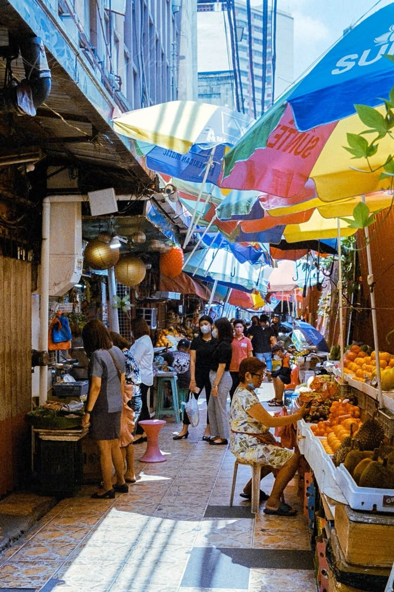
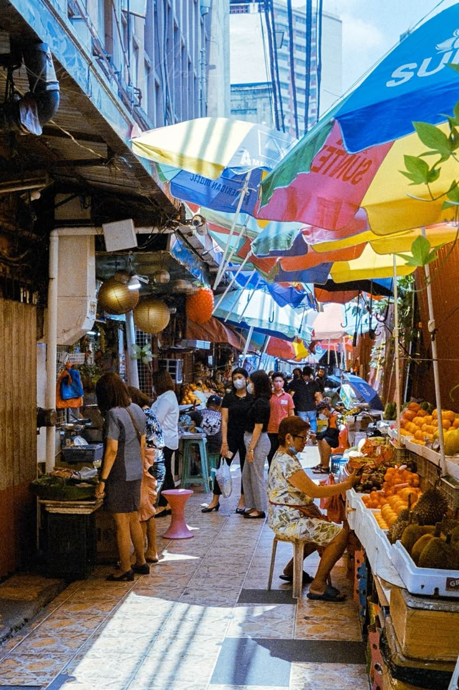

Madalas na walang digital na pampublikong pamilihan para sa mga mamimili. Ang isang sistema sa pag survey ay makakatulong sundan ang permisso sa prutas at gulay, prdoukto at pag sunod sa kalinisan
Ang isang digital na sistema sa pag survey ay tumutulong sa mga lokal na gobyerno pamahalaan ang mga tindero sa pampublikong pamilihan, sundan ang permisso sa mga karne, produkto, at siguradong kalinisan.

Ang lokal na gobyerno ay tumutulong pamahalaan ang mga tindero ng pampublikong pamilihan ng mas epektibo gamit a digital survey system na sundan ang permisso sa mga isda, produkto at siguradong kalinisan.

 
